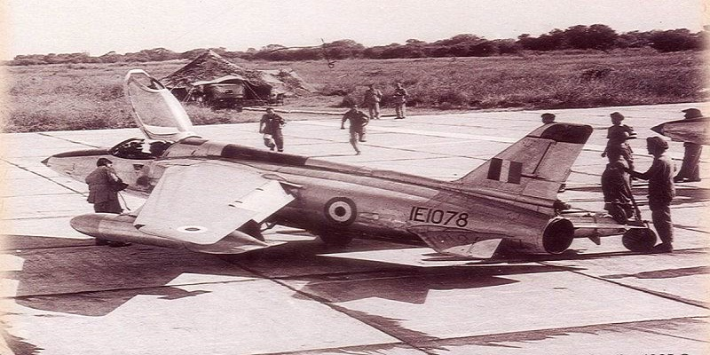
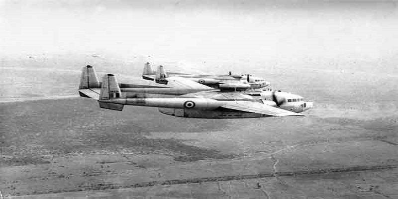
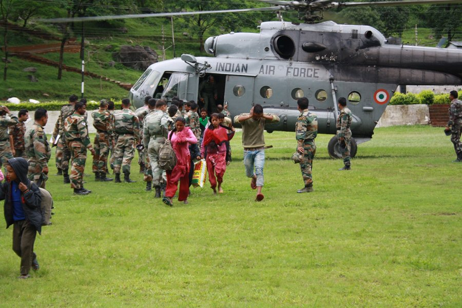

HISTORY

The IAF was technologically inferior to the PAF in 1965.
But IAF Gnats piloted by brave officers cut down Pakistani Sabres with such ferocity that the Gants came to known as ‘Sabre Slayers’.

The IAF destroyed more than 29 Pakistani tanks, 40 APCs and a railway train during the Battle of Longewala in the 1971 Indo-Pak War besides a number of critical installations.
The Motto of Indian Air Force has been taken from eleventh chapter of the Gita, the Discourse given by Lord Krishna to Arjuna on the battlefield of Kurukshetra during the Great War of Mahabharata.

IAF Gallery
The rescue operation was launched by the IAF to evacuate civilians affected by the 2013 North India floods. The IAF airlifted a total of 19,600 people – flying a total of 2,140 sorties and dropping/landing a total of 3,82,400 kg of relief material and equipment